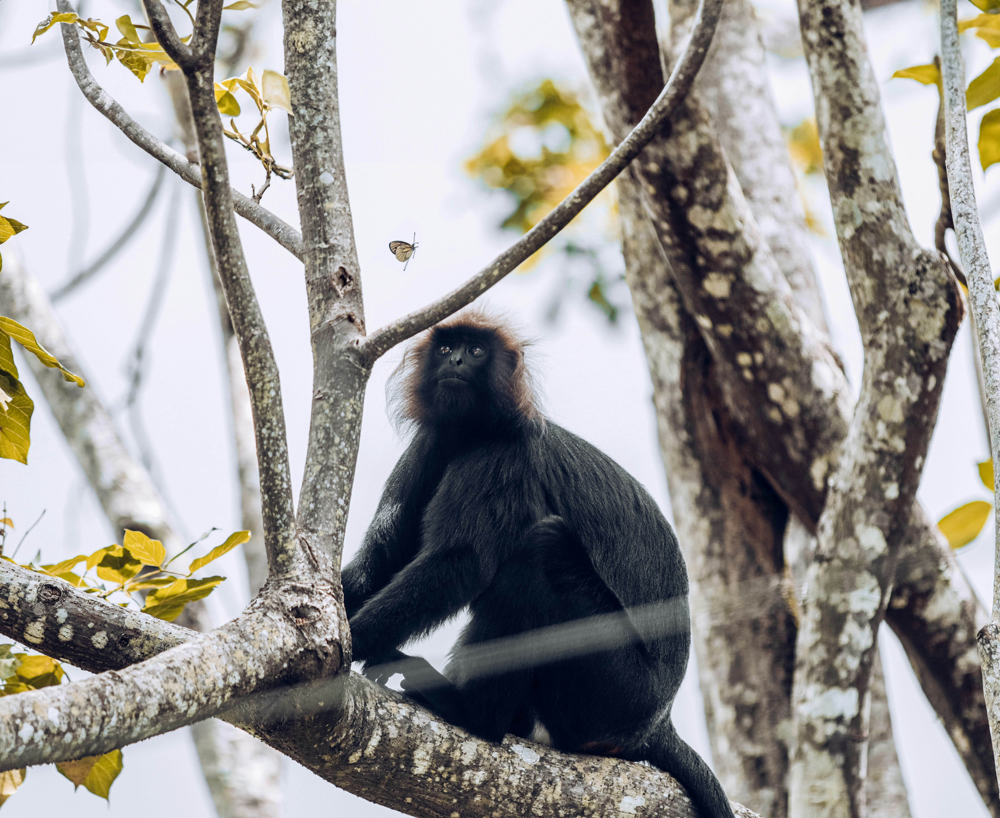

The Western Ghats
Nature, Wildlife & Conservation
"The Western Ghats whisper the stories of rain, roots, and resilience."
Discover the Western Ghats
Stretching along the western coast of India, the Western Ghats are a UNESCO World Heritage site known for their rich biodiversity, endemism and stunning landscapes.

Wildlife
Discover the incredible biodiversity of the Western Ghats, home to rare and endangered species found nowhere else on Earth.

Geography
Explore the dramatic terrain, ancient forests, and breathtaking landscapes that make the Western Ghats truly unique.

Conservation
Learn about the ongoing efforts to protect and preserve this crucial ecosystem for future generations.